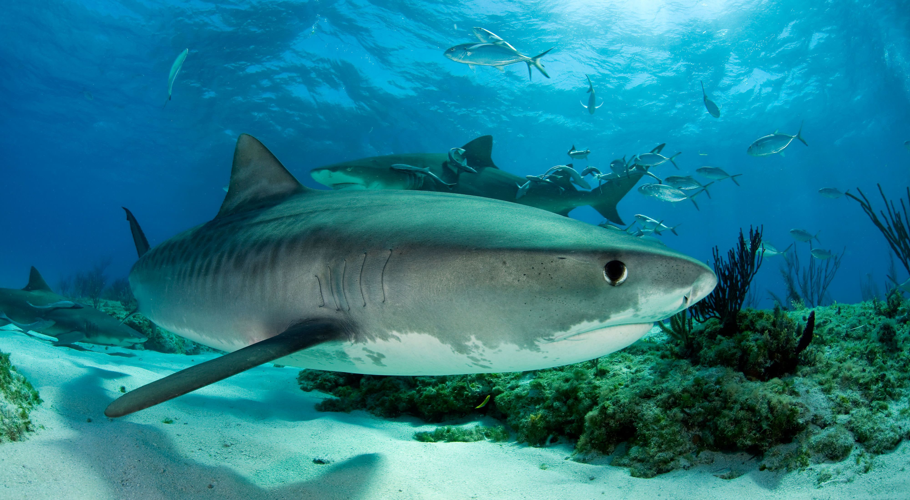

What is a Keystone species?
Species in an ecosystem that play a central role in the health of that ecosystem, and whose removal may cause the decline of the ecosystem. Tiger sharks are one of the many keystone species

What is trophic cascade?
An ecological process triggered by the addition or removal of top predators, and the effect it has on the relative population of other species in the food chain.
.png)
Tiger Shark facts.
- They can be found in tropical and subtropical waters around the world.
- They are predators with a diverse diet that includes fish, seals, squid, and sharks.
- They are one of the largest shark species, with most of them reaching lengths of 10 to 14 feet.

Ecosystem, and role
Ecosystems: The tiger shark inhabits many marine ecosystems, including coastal waters, coral reefs, and open ocean. They are found worldwide in warm and tropical seas.
Role: As apex predators they help regulate the population of many species.

What would happen if Tiger Sharks declined, and how it would impact humans?
Climate Change: Tiger Sharks indirectly help control climate change. Without Tiger sharks, there will be more Manatees to eat the seagrass.
Seagrass: CO2 is stored in seagrass so if there is less seagrass then CO2 emissions will go up speeding up climate change (positive feedback loop).
Impact on humans: Climate change can lead to air pollution, extreme weather events, and increased hunger and poor nutrition.

How are people protecting/hurting tiger sharks? How can we help them?
Threats: Due to overfishing Tiger Shark's are rapidly declining. They are also at risk of finning.
WWF: They work to regulate finning, overfishing, and overconsumption of sharks. They also help countries implement acts to protect sharks.
What can we do: I believe that if we promote responsible fisherie management practices and put trade regulations in place to protect vulnerable shark species we can protect them.

Current Event
In west Australia tiger sharks declined by 71%. This caused one of Australia's worst heatwaves killing more than 90% of the seagrass in that area, proving how Tiger Sharks regulate climate change.